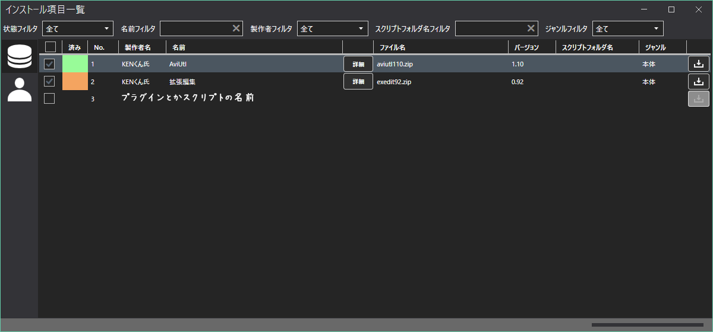
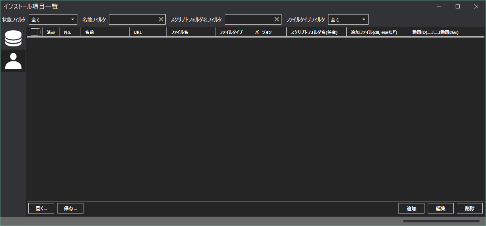
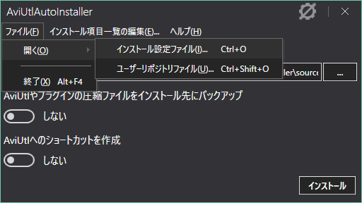

使い方
AviUtlAutoInstallerの使い方を説明します。
AviUtlAutoInstallerの起動は、aai.exeをダブルクリックで行います。
基本操作
主に以下の画面を操作します。
手順
- インストール先を選択する。
(デフォルトでは、AviUtlAutoInstallerがある場所になります)
- 必要に応じて、
インストール項目一覧の編集からプラグイン/スクリプトの追加と削除をする。
- インストール時のオプションを選択する。
(バックアップとショートカット)
- インストールボタンをクリックしてインストールを開始する。
インストール完了後は以下のようなファイル構成になります。
AviUtl/
|- backup_files/ (インストールに使用した圧縮ファイル群が入ります(バックアップ有効時))
|
|- exe_files/ (x264guiEx, QSVEnc, NVEnc, VCEEncをインストールすると作成されます)
|
|- plugins/
| |- figure/
| |
| |- script/ (インストールしたスクリプト群が入ります)
| |
| `インストールしたプラグイン群が入ります
|- aviutl.exe
|- aviutl.ini
|- aviutl.sav
|- aviutl.txt
|- contents_tree.txt
| (コンテンツツリーに該当するプラグイン/スクリプトをインストールした時に作成されます)
|- InstallationList_yyyyMMdd_hhmmss.profile
| (インストールしたときのプラグインやスクリプトの情報が入っています。
| また、ファイル名のyyyyMMdd_hhmmssはインストール日時が入ります)
` - デフォルト.cfg
インストール項目の編集
ウィンドウ表示時は以下のような画面になります。
左側にある2つのアイコンは次の意味になります。
プリインストールされているインストール項目です。(以降、プリインストールリポジトリと呼びます)
ユーザーが編集できるインストール項目です。(以降、ユーザーリポジトリと呼びます)
また、項目をインストール後は、"済み"の箇所が以下のようになります。

- 既存のものから選択
- インストールしたい項目にチェックを入れる
- 入れ終わったら、インストール項目一覧のウィンドウを閉じる
- 自分で項目を追加
以下の画面を操作します。

項目を追加
- ユーザーリポジトリを選択
- 右下の追加ボタンをクリックする
- 編集ウィンドウが出るので、必要に応じて記入する
名前: 重複しない項目名を入力します。
URL: ファイルがない場合にダウンロードを行います。(指定がない場合は、ダウンロードは行わずローカルのファイルを使用します)
ダウンロードするファイル名: ファイルをダウンロードする時、インストールする時に使用します。
ファイルタイプ: プラグインかスクリプトを選択します。
スクリプトフォルダ名: スクリプトをまとめるためのフォルダ名を指定します。(プラグイン選択時は表示されません)
バージョン: 登録時のバージョンを指定します。(指定することで、公開されているもののバージョンが新しいか比較できます)
AviUtl指定以外のファイル名または拡張子: AviUtl標準で使う拡張子以外で必要なものがあれば記入してください。(ワイルドカード可)
コンテンツツリーに登録するニコニコ動画のID: プラグインやスクリプトを紹介しているsmから始まる動画IDを指定します。
- 記入が終わったらOKボタンを押す(有効な内容でなければ、ボタンは有効になりません)
項目を編集
- 右下の編集をクリックする
- 追加のときと同様に変更する
項目を削除
1つずつ削除
- 削除したい項目で右クリックする
- 削除をクリック
- 確認ダイアログでOKをクリックする
まとめて削除
- 削除したい項目の左端にあるチェックボックスにチェックを入れる
- チェックを入れ終わったら、左下の削除ボタンをクリックする
項目一覧を保存
- 項目の追加、編集をする
- 左下の保存をクリックする
- 保存先を選択して保存する
保存先は、どこでも良いですが、以下の場所に保存すると管理しやすいです。
AviUtlAutoInstaller/repo/user_repo
項目一覧を読み出す
- 左下の開くをクリックする
- 開きたい.urepoファイルを選択する
開く際は、すでに表示されている項目一覧が上書きされるので注意してください。
- 項目の事前ダウンロード
事前にダウンロードをすることで、インストール時のダウンロード処理を飛ばすことができます。
ダウンロードができる状態です。
ダウンロードができない状態です。
インストールする際は、事前にファイルを以下のフォルダに入れてください。
AviUtlAutoInstaller/cache
環境の再構築(再インストール)
過去にこのツールを使ってインストールした環境を再構築します。
- インストールにユーザーリポジトリを使用している場合は、ファイル -> 開く -> ユーザリポジトリファイルを選択して読み込む
- ファイル -> 開く -> インストール設定ファイルを選択して、
InstallationList_yyyyMMdd_hhmmss.profileを読み込む

- インストールボタンをクリックする
個別インストール/アンインストール
AviUtlをインストール後に、追加でプラグインやスクリプトをインストール/アンインストールをしたい場合でも、個別に行うことが出来ます。
この操作は、プリインストールリポジトリでのみ有効です。
- インストール
- インストールしたい項目を右クリックする
- "インストール"を選択してクリックする
- アンインストール
- アンインストールしたい項目を右クリックする
- "アンインストール"を選択してクリックする
- まとめてインストール
AviUtlと拡張編集は除外されます。
- インストールしたい項目にチェックを入れる
- どこでも良いので、項目上で右クリックする
- "チェックしたものを一括インストール"をクリックする
- まとめてアンインストール
AviUtlと拡張編集は除外されます。
- アンインストールしたい項目にチェックを入れる
- どこでも良いので、項目上で右クリックする
- "チェックしたものを一括アンインストール"をクリックする
項目のプロパティ
プリインストールリポジトリの項目のプロパティを表示します。
- 概要: 項目がどういったものかが簡単に書いてあります
- 製作者: プラグインやスクリプトなどの製作者名です
- バージョン: プラグインやスクリプトなどのバージョンです
- ジャンル: どういったジャンルのものかが書かれています
- 種類: 本体、プラグイン、スクリプトの3種類のうちいずれかが表示されます
- 依存元: このプラグインやスクリプトを使用するにあたって、依存するものが書かれています
- ダウンロードURL: ダウンロード先のURLが書かれています
- ダウンロード状態: ファイルのダウンロード状態が書かれています
- 使い方: 使い方のサイトがある場合に、ここに使い方のURLが表示されます
{kind=link}